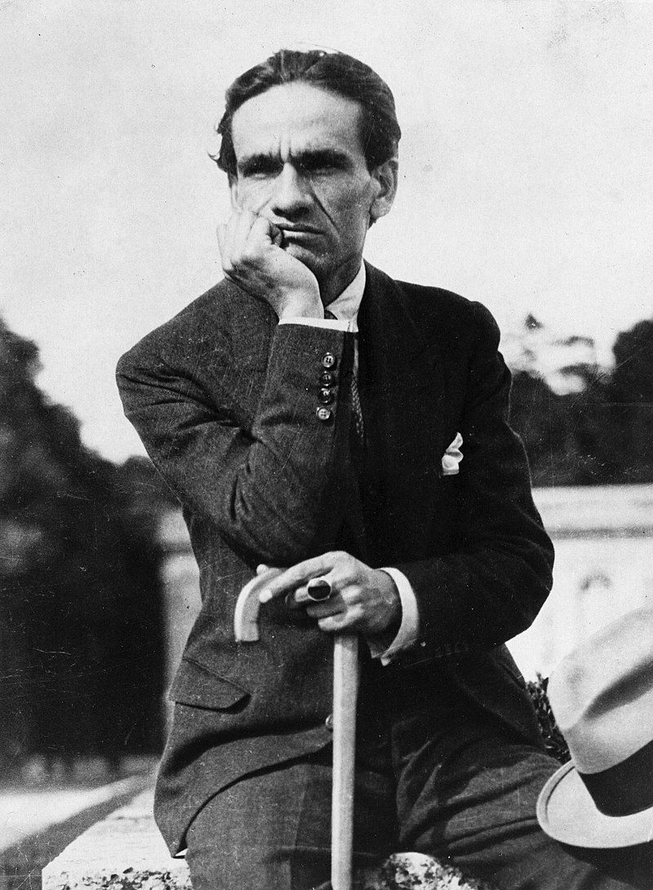

César Vallejo: breve biografía
Este sitio está dedicado a la difusión de la obra del gran poeta César Vallejo, quien, junto a algunos otros como Pablo Neruda y Rubén Darío, ha sido uno de los pilares fundamentales de la poesía latinoamericana de principios del siglo XX. Su legado hoy en día aún persiste.
 César Abraham Vallejo Mendoza (Santiago de Chuco, 16 de marzo de 1892 - París, 15 de abril de 1938) fue un poeta y escritor peruano. Es considerado uno de los mayores innovadores de la poesía universal del siglo XX y el máximo exponente de las letras en el Perú. Es, en opinión del crítico Thomas Merton, «el más grande poeta católico desde Dante, y por católico entiendo universal» y según Martin Seymour-Smith, «el más grande poeta del siglo XX en todos los idiomas».
Publicó en Lima sus dos primeros poemarios: Los heraldos negros (1918), con poesías que si bien en el aspecto formal son todavía de filiación modernista, constituyen a la vez el comienzo de la búsqueda de una diferenciación expresiva; y Trilce (1922), obra que significa ya la creación de un lenguaje poético muy personal, coincidiendo con la irrupción del vanguardismo a nivel mundial. En 1923 dio a la prensa su primera obra narrativa, Escalas, colección de estampas y relatos, algunos ya vanguardistas. Ese mismo año partió hacia Europa, para no volver más a su patria. Hasta su muerte residió en París, con algunas breves estancias en Madrid y en otras ciudades europeas en las que estuvo de paso. Vivió del periodismo complementado con trabajos de traducción y docencia.
En la última etapa de su vida no publicó libros de poesía, aunque escribió una serie de poemas que aparecerían póstumamente. Sacó en cambio, libros en prosa: la novela proletaria o indigenista El tungsteno (Madrid, 1931) y el libro de crónicas Rusia en 1931 (Madrid, 1931). Por entonces escribió también su cuento más famoso, Paco Yunque, que saldría a luz años después de su muerte. Sus poemas póstumos, Poemas humanos fueron publicados junto con España, aparta de mí este cáliz, en 1939 gracias al empeño de su viuda, Georgette Vallejo. La poesía reunida en estos últimos volúmenes es de corte social, con esporádicos temas de posición ideológica y profundamente humanos. Para muchos críticos, los Poemas humanos constituyen lo mejor de su producción poética, que lo han hecho merecedor del calificativo de «poeta universal».